V-rep 在 Delta 3D-Printer虚實整合模擬上的應用
組員
40323218 李冠興
40323230 張 元
40323231 張立昇
40323250 詹偉志
指導老師
嚴家銘 教授
李武鉦 教授
Delta 3D-Printer
3D 列印機硬體設置
- 3D Printer 結構介紹
- 組裝過程
- 程式碼介紹
- Cura
- Pronterface
- 校正機台
- 重點提攜
V-rep
電腦輔助動態模擬
- V-rep 基本介紹
- Onshape 介紹(待改)
- V-rep 細部介紹(待改)
- 四連桿 範例(待改)
- 八連桿 範例(待改)
- 控制模擬(待改)
- 控制範例 1 - 可變電阻控制噴頭位置
- 控制範例 2 - 六軸感測器控制噴頭位置
- V-rep - 模擬列印與控制
- 結論
Pyslvs
平面連桿機構模擬及尺寸合成套件開發
- 使用技術
- 平面模擬
- 數學模型
- 尺寸合成
- 功能簡介
- 開發歷程
摘要
根據國外研究指出，3D Printing 是近年來發展最快速的技術之一，國內外各家科技大廠紛紛投入。 3D列印技術讓原本只存在腦海中的概念，經由 3D Printer 做快速打樣成型，節省了過往傳統打樣的繁複過程與費用。 在使用 3D Printer 列印的過程中，我們發現有時會有路徑錯誤的問題，跟 CNC 比較起來缺少模擬列印的功能，使列印前缺少一道檢查錯誤的步驟。
研究動機
一開始我們在研究模擬腳踏車的齒輪與鍊條機構，利用 3D Printer 印製零件組裝，但是在印製的過程時常出現 問題，導致花費許多時間和材料，經過討論想到如果有一 套能夠模擬3D列印的軟體，先經過這套軟體的模擬可以降 低錯誤的發生率，也可以提升印製的品質。
研究目的
內容
Delta 3D-Printer 結構介紹

Delta 3D-Printer 硬體
 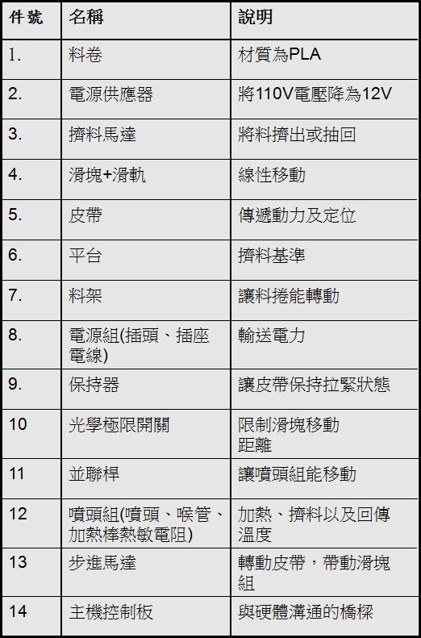
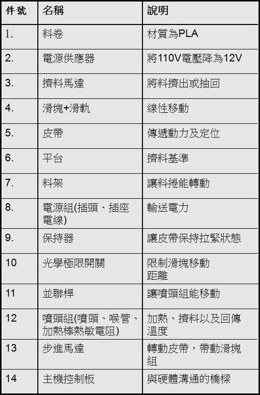
韌體程式碼
先下載 Arduino，之後開啟 Repetier 中的 Configuration.h 進行修改裡面的參數，修改完後按編譯，完成韌體的參數設定。
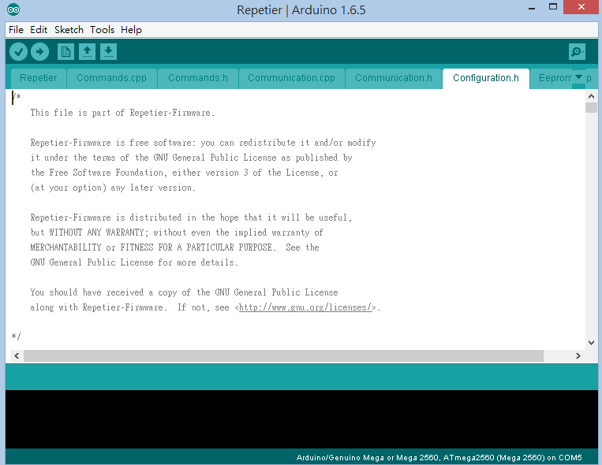韌體程式碼
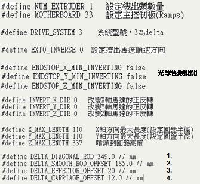 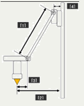
Cura - 機台設定
進入 Cura 的主畫面後須先設定機台，點選機型設置 (圖.1) 進入設定頁面 (圖.2)，此機台的平台為圓形所以寬、深相同，設定 Circular。 由於機台為三角形機台，因此平台中心設為 (0,0)。波特率設為 115200（需與韌體相同）。設定完之後即可開始使用 Cura。


Cura - 參數設定
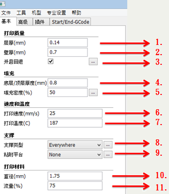 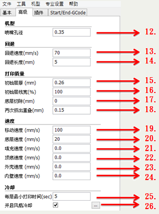
Cura - 參數設定
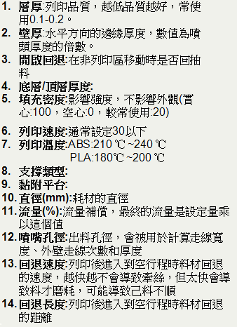 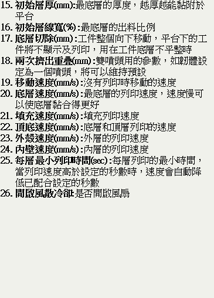
Cura - 介面說明
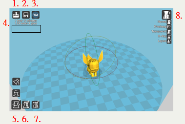 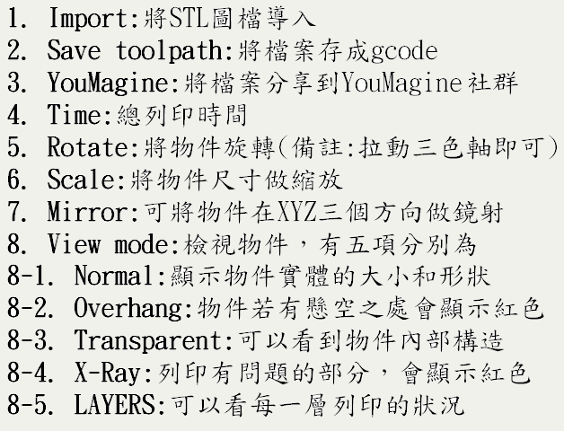
Pronterface - 介面
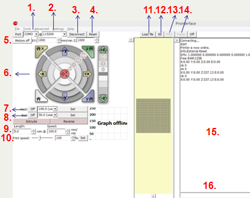 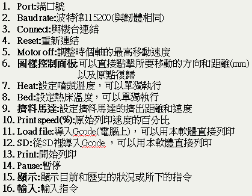
機台校正
與 Pronterface 連接
電腦先與3D列印機連接（USB），之後開啟 Pronterface，按下 Port（自動搜尋端口），之後按下 connect 進行連接 (圖.3)。
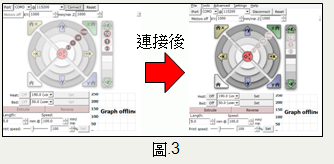機台校正
原點復歸
在圖樣控制面板中按下原點復歸，讓 Pronterface 紀錄原點，沒做此步驟可能會造成撞機 (圖.4)。
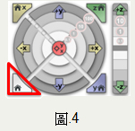機台校正
量測列印高度
在輸入地方輸入 G01 Z10，讓噴頭下降至距離平台 10mm 處，預留避免撞機的可能，放置一張紙在平台上，之後在圖樣控制面板中按 Z 軸的位移量讓噴頭接近平台，位移量由大到小避免撞機。噴頭下降的過程中挪動平台上的紙張，直到拉動紙張會有一股阻力時，即可紀錄顯示中的數值。
機台校正
修改列印高度
按下 disconnect 解除連結，之後開啟 Cura，點選機型選單中的機器調試，修改列印高度。(圖.5) 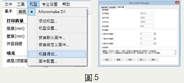 如果 Ponterface 上顯示 Z 軸為正數，則將列印高度的數值減掉顯示的數值；反之則加上。改完後，按下保存後復位。
機台校正
調整 XYZ 軸的高度
連接 Pronterface 重複連接和復歸後下指令量測紅色三點 (圖.6)，並記錄下來。
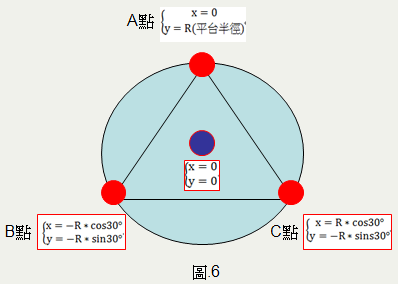機台校正
之後調整各軸滑塊上的螺絲，使螺絲向上或向下移動，影響光學極限開關，讓各軸的總位移量改變。(圖.7)
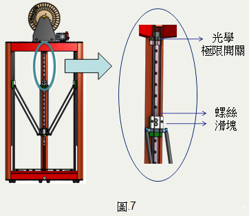機台校正
圖.8 和 圖.9 分別為 pronterface 與調整螺絲後的數值。
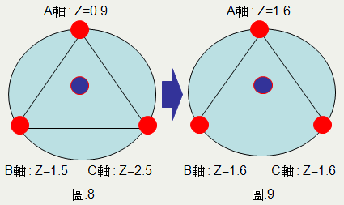- 螺絲逆時針轉一圈，值上升0.4mm
- 螺絲順時針轉一圈，值下降0.4mm
- A軸 - 由0.9上升到1.6，將螺絲逆時針轉1.75圈
- B軸 - 由1.5上升到1.6，將螺絲逆時針轉0.25圈
- C軸 - 由2.5下降到1.6，將螺絲順時針轉2.25圈
機台校正
四點同高
做完機台校正、原點復歸、測量與修改列印高度後，四點高度為如 圖.10，這種狀況會讓列印出來的東西變碗狀，四周較高而中間偏低。
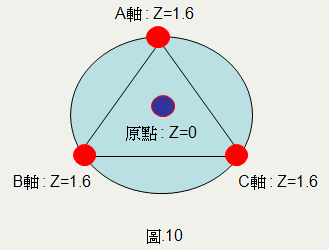 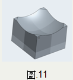機台校正
切斷 Pronterface ，切換至 Cura 中的參數設定頁面，修改水平半徑的參數。(圖.12)
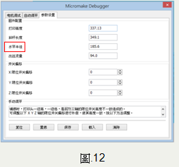- 水平半徑數值減少 - 四周數值增加 0.2
- 水平半徑數值增加 - 四周數值減少 0.2
本例題為將四周數值降低 1.6，因此將水平半徑的數值增加 8。修改完後按下保存，在按復歸後完成。
機台校正
修改列印成品大小
做完步驟一到步驟五後即可開始列印，列印出來的工件用游標卡尺做量測，有可能會發現工件不如預期的縮水或變大。 做法：開啟 Cura 的參數設置修改斜桿長度(圖.13)
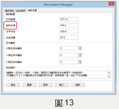- 斜桿長度增加 1mm - 列印成品尺寸減少 0.2mm
- 斜桿長度減少 1mm - 列印成品尺寸增加0.2mm
本題須將 39.40mm 增加到 40.00mm，則減少斜桿長度 3mm。按下保存後復歸。
V-rep - 簡介
V-rep為 Virtual robot experimentation platform 的縮寫，是一套機器人模擬軟體，讓使用者可以模擬整個機械系統 。
程式語言支援 C/C++、 Python、 Java、 Lua、 Matlab、 Octave 等等，可使用在遠端監控、硬體控制、快速原型驗證、演算法開發與參數調整、安全性檢查、機器人教學與工廠自動化模擬等各種領域。

Onshape - 簡介


Onshape 是一套由前 Solidworks 團隊開發出來的 3D 建模平台，它的優點及特色就是可以線上協同設計，和同伴能夠分工合作，且能達到參數式設計。
Onshape的使用者分類 ：
教育、商業跟業餘三大類。
Onshape - 簡介


Onshape 是一種 Full Cloud 的網路 CAD 設計平台，它的檔案都存在"雲端" ，提供協同設計的功能，並且可以很容易地從雲上找到其他人公開的模型。
協同設計主要的概念為團隊間的分工合作，大家提供自己的想法或專長，使概念更完善，這部份 Onshape 甚至提供可在平板或手機上使用的功能。
Onshape - 繪製範例
 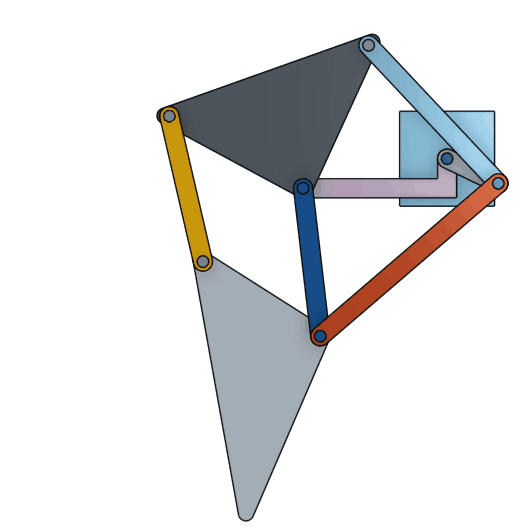
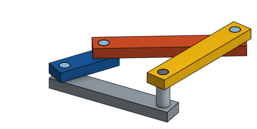
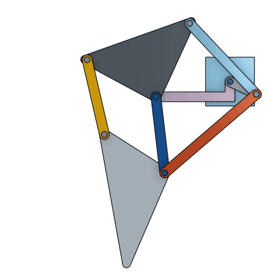
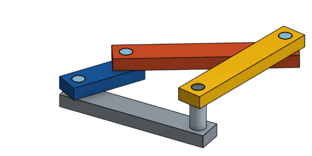
V-rep - 細部介紹


- 視角移動
- 視角旋轉
- 視角縮放
- 視角移動至物體
- 物體定位 (x,y,z)
- 物體旋轉 (x,y,z)
- 開始模擬
- 暫停模擬
- 結束模擬
- 慢速
- 加速
V-rep - 細部介紹
V-rep的組合方式是由基座開始排序每個零件的主從關係，由上往下所構成，類似樹狀圖的方式往下延伸。
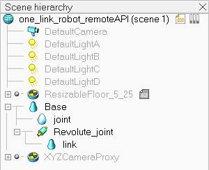 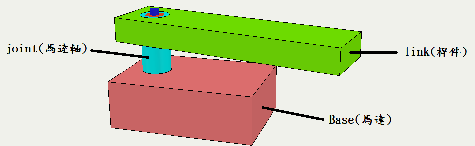
需要轉動的部分必須加裝 Revolute _ joint ( 虛擬轉軸 )，它可以設定固定的轉速、扭矩或相對旋轉運動。
Revolute _ joint 需要和軸重疊，排序完成後設定參數，按下啟動就可以開始模擬。
V-rep - 細部介紹
組合的系統分成開放式 (Open chain) 與封閉式 (Close chain)，這種狀況在某些分析軟體也會遇到。 Open chain - 當系統架構為非封閉式機構，各個零件只受另一零件影響做相對運動。 Close chain - 當系統架構為封閉式機構，會有兩個 (含 )以上零件同時對單一零件造成影響。
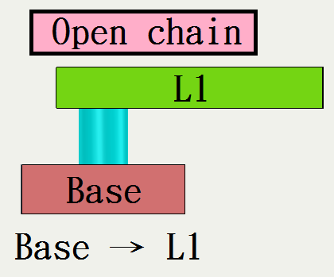 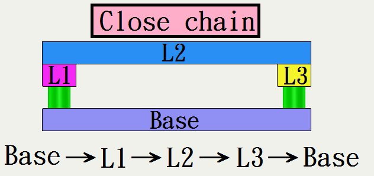V-rep - 四連桿範例
以此例來說，當組合階層變成了一個封閉迴路，就會有一個零件會被共用，稱為 Close chain，這時候就必須使用 dummy 連結，以保持此機構之約束條件。
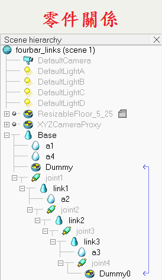 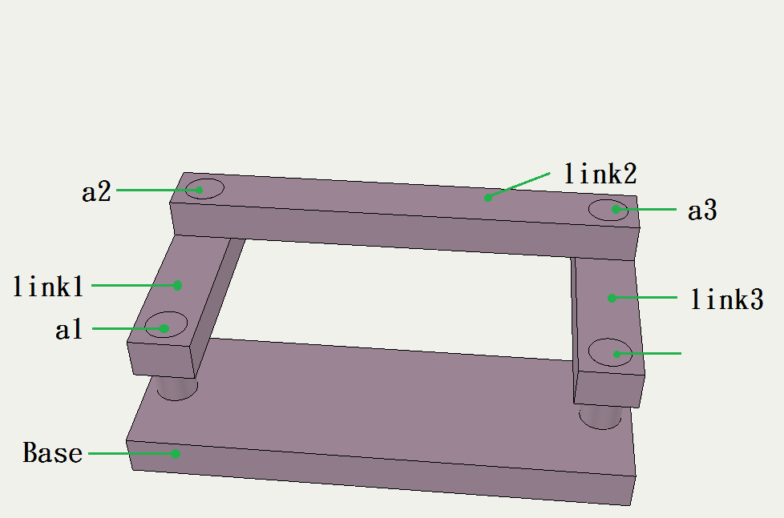 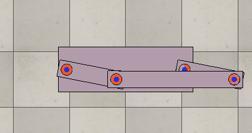V-rep - 四連桿範例
若 Close chain 不使用 dummy 接合，會導致運動狀況出問題。
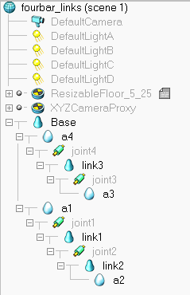 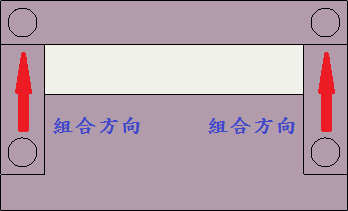 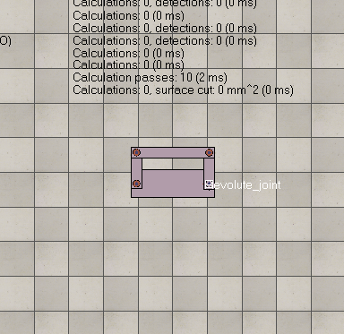V-rep - 八連桿範例
八連桿範例也屬於 Close chain，因為多處都有連接複數零件，故要使用的 dummy 較四連桿多。


V-rep - Printer組裝
當 Printer 匯入 V-rep 後，拆解開來的零件約有一百個，組裝時須要特別留意，尤其是噴頭座的部分為 Close chain，該關節處因為自由度的關係， joint 的位置就顯得非常重要。
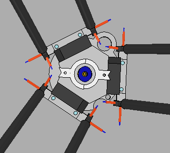V-rep - 內部 Scripts 控制
V-rep可透過內部 Scripts 編寫控制指令，能夠控制轉軸角度、位置、路徑等等，如下圖，先讓轉軸 往負45度角轉動,當轉軸到達目標時，再往45度角轉動。


V-rep 也可藉由 Scripts 接收其他裝置傳送的資料達到控制，以下拿 Arduino 做為範例。
控制範例 1 - 可變電阻控制噴頭位置
若要使用 Arduino 控制 V-rep，除了Arduino本身的程式碼之外，還須設定 V-rep 的 Scripts 內部程式，並透過設定相同的通訊埠和 Arduino 的 COM 點，才能達到內外溝通的功能。
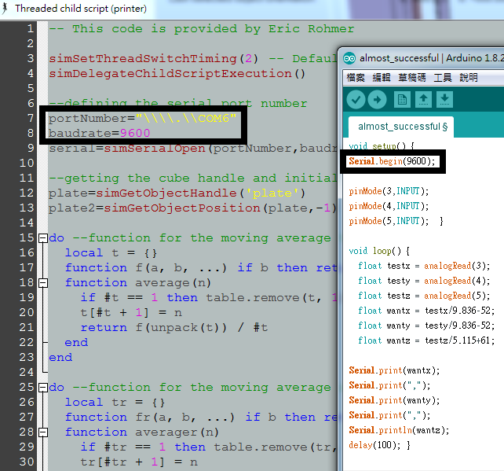控制範例 1 - Arduino程式
以下程式碼為使用三個可變電阻，分別控制V-rep內之Printer噴頭位置，可變電阻能轉之角度為360度，轉1度之電阻值為 最大電阻值/360 ，經單位換算，電阻每轉一度能使噴頭移動固定距離 。 分別將三個可變電阻的值存成固定格式 (x,y,z)，以便在 V-rep 內部讀取後轉換成噴頭位置 。
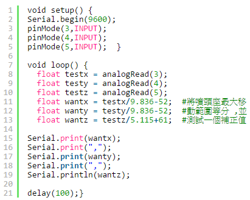控制範例 1 - Scripts 程式
本程式基本架構由 Eric Rohmer 所提供，控制方式為收到 Arduino 傳來固定格式的數值後，經由程式語法將其轉換為點座標，使噴頭移動到相對映的位置。
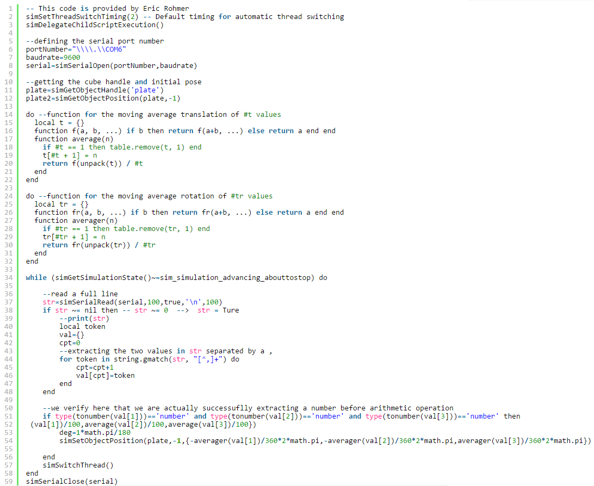可變電阻控制噴頭位置 範例影片
控制範例 2 - 六軸感測器控制噴頭位置
這個控制採用 MPU6050 六軸加速度感測器，經由角度之變化後，透過和前範例相同的方式，傳送數值到 V-rep 內部後，轉換成噴頭欲移動之座標點。

六軸感測器控制噴頭位置 範例影片
因為手的晃動導致噴頭位置不穩定
V-rep - Printer校正
前兩者為模擬練習，只有限制移動範圍但並未經過精準校正，但控制器和實體列印時同樣需要校正，雖然實體熱床對於 CURA 程式的座標為 (0,0,0)，但 V-rep 之內部座標還要包含熱床本身之高度，故要補償一個高度值 (L1+L2)，如此就能控制出料口之位置。
如圖，出料口碰觸熱床之補正後高度為 t，經單位換算後之高度 t = L1+L2 = 0.1165m ( 116.5 mm )
 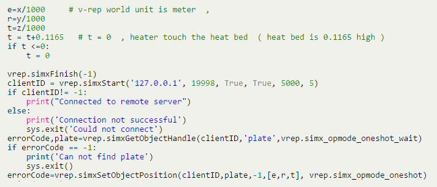
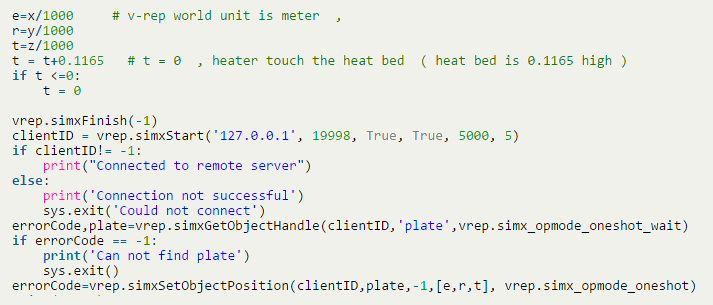
V-rep - Tkinter控制介面
此控制採用 Python 本身的 Tkinter 模組，經由 Vrep.py 將 V-rep 內的函式轉換後 再由 Python 控制,通訊採用類似 Arduino 之通訊埠，達到內外溝通。 以下為Tkinter介面，依照輸入的座標位置，讓噴頭移動至該位置。
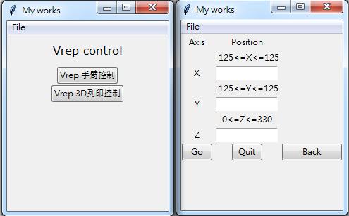V-rep - Particles
為了能夠達到模擬列印的功能，必須讓噴頭的位置產生物件(粒子)，且這個物件產生的位置會隨著噴頭的位置變化而改變，但因為粒子的屬性為 dynamic，電腦運算的部分會隨粒子的數目變多而變慢，故不太能列印大型零件。

V-rep - Printer模擬列印
當控制及列印的粒子完成之後， G-Code 的部分為 CURA 產生，並採用先前報告小組同學 祐生的程式來解讀，並透過先前的方式，將值傳回V-rep內部，雖然不是專門模擬列印的軟體，也是能達到模擬列印的功能。

V-rep - Printer模擬列印
如同先前所說，列印的粒子數量不能太龐大，如同填充的密度不可太密，但模擬的部分稍為將粒子的尺寸調大，達到更真實的效果，如同填充密度100%。

V-rep 列印成果影片
結論
結論內容
Pyslvs

Planar Linkages Simulation
Dimensional Synthesis
Version 0.7 (stable)
Python 3

- 直譯式語言利於有效率地測試調整
- 易於閱讀與整理的程式碼
- 與中低階語言的結合力
- 背景記憶體處理
- Web 框架
- 物件導向、泛型編成
- 豐富、易使用的模組資源
Technologies

SWIG
- 將 C 語言與 C++ 語言轉換給中高階語言使用
- 適合對 C 語言熟悉的使用者製作程式端口
- 能夠在高階語言的程式碼中發揮 C 語言高速運算的能力
- GPL 3.0 授權
Cython
- 以 Python 語法編寫程式
- 使用 C++ 語言函式庫
- 用以大量運算驗證後的數學模型
- 擁有 C++ 語言高速執行的特性
Qt and PyQt

跨平台的 C++ 應用程式開發框架
PyQt 作為 Python API 的形式連接 Qt
- 商業授權
- LGPL 2.1
- GPL 3.0
Tool Kit
編譯方法

Git and Fossil
- 雲端倉儲管理軟體
- 系統性的版本紀錄功能
Planar Linkages Simulation
Solvespace
Open source 2D / 3D CAD Application
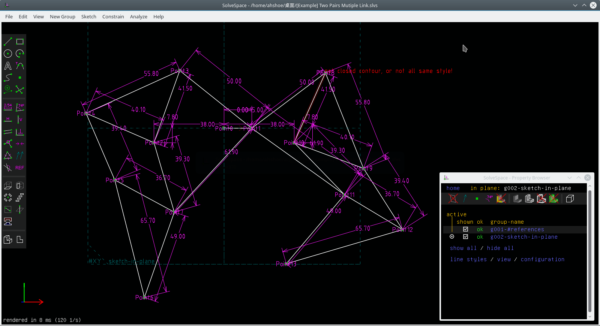Problem-solving library
獨立幾何解題程式庫
Mathematical Model

Dimensional Synthesis
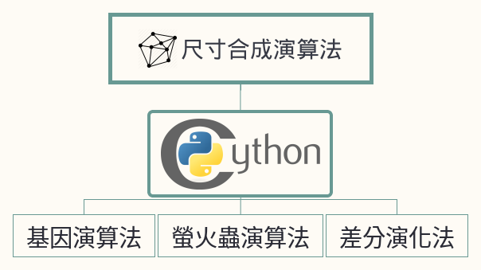
Convergence of f(x)=x
Genetic, Firefly and Differential Evolution

Convergence of f(x)=x
Genetic and Firefly

Features
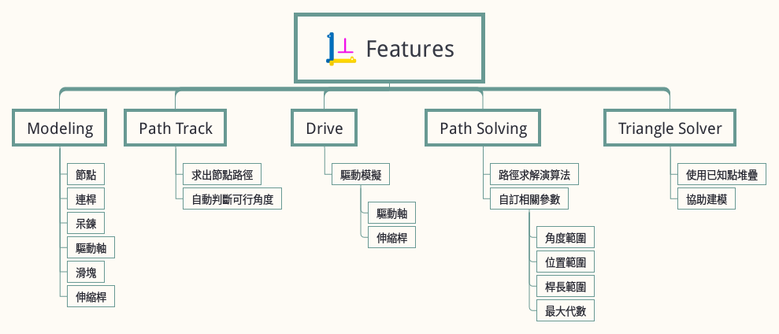
Main Window
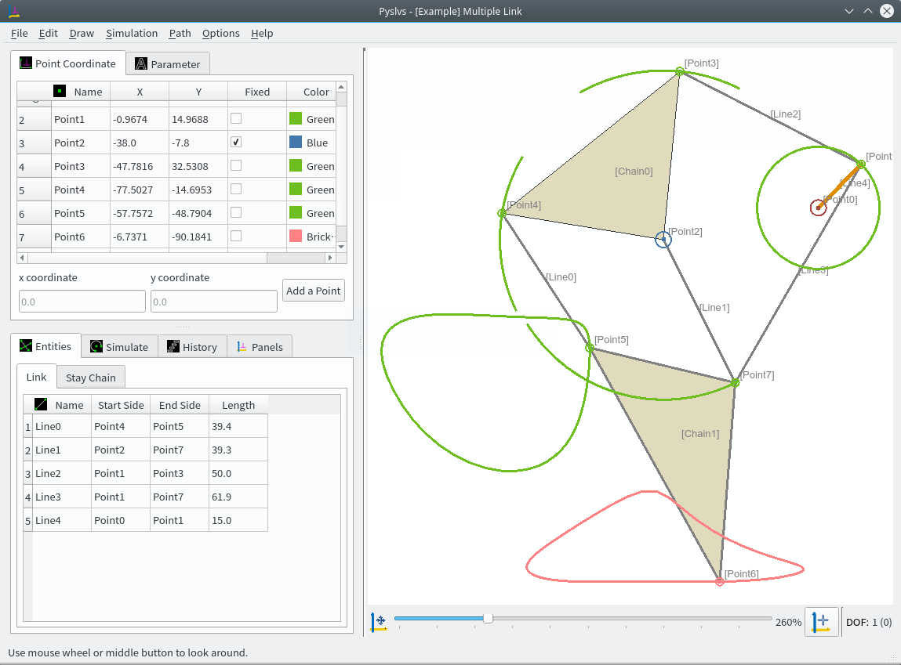
Triangle Solver Panel
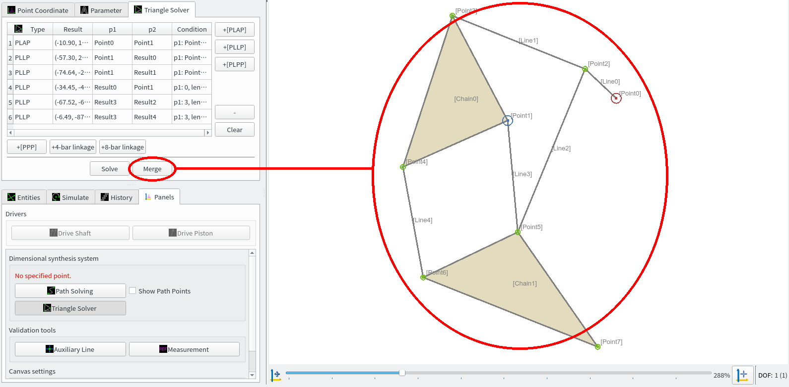
開發歷程
- 研究 Solvespace 原始碼。（2016 年 7 ~ 8 月）
- 編譯 Solvespace 對 Python API 成功，並成功用 matplotlib 繪製第一張四連桿的端點路徑。（2016 年 9 月初）
- PyQt 介面計畫開始。（2016 年 9 月中）
- 第一個 Release 版本 v0.1。（2016 年 9 月 27 日）
- 第四版 v0.4 加入了路徑解題的尺寸合成演算法系統。（2017 年 1 月 31 日）
開發歷程
- 第五版 v0.5 加入了滑塊和參數系統、復原重做功能、DXF 與 slvs 格式的匯出功能。（2017 年 3 月 4 日）
- 第六版 v0.6 進行大量錯誤修正與介面改善，並加入三角求解器。（2017 年 3 月 23 日 ~ 4 月 29 日）
- 第七版 v0.7 解決 Solvespace 技術問題，統一功能管理，大幅優化介面與運算排程。（2017 年 5 月中）